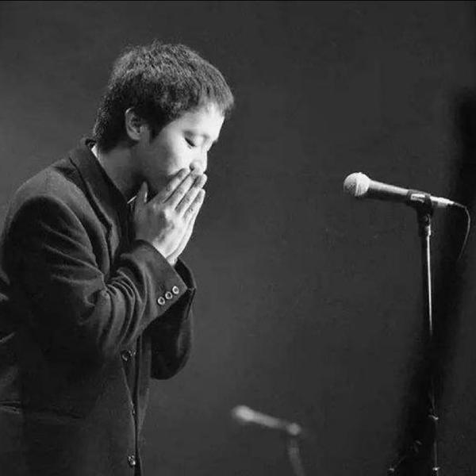

我在人与 Agent 的接触面上做产品。白天在剪映做图片、成片与剪辑 Agent；其余时间，在做 NowBuild.ai 和几个 personal agent。

我相信下一代界面不是更多按钮，而是言出法随——
你说出口，它就发生。
对话负责意图，界面负责呈现你所想的东西。
A MANIFESTO, NOT A RESUME
我是 ENFP，享受 0 到 1 本身。写故事、做电影、搭产品，对我来说是同一种冲动。
这两年我反复在同一件事上较劲：人与 Agent 之间到底该怎么接触。我做过营销 agent team、todolist 里的 agent、语音转思维导图、以克隆声音为入口的陪伴产品。它们指向同一个答案——对话与任务的下发、执行应该分离：人只表达意图，agent 负责拆解、调度与执行，再把结果交还给一个人能轻松看懂的界面。
我不迷信大厂或独立开发的标签。我 vibe coding 能做出完整的产品，几乎具备 0–1 的全部研发能力；也认真学过增长，知道那是另一门更重的功夫。我在意的始终只有一件事：为一部分人，做出真正有价值的东西。
来自我的即刻。它们不是结论，是我下注的方向。
当意图到结果之间的距离趋近于零，产品设计的重心会从"功能入口"转向"意图理解与信任"。
一个能被反复消费的 IP 声音，比一个功能更像入口——陪伴、学习、同传、导游都从这里长出来。
模型记住的不再是聊天记录，而是你这个人的偏好权重——这才是真正属于你的智能。
Super-agent 的 Router + Worker 架构，我早就在 NowBuild 和 todoAgent 里做过一版——我是真用户。
一个对话与项目管理 agent，调度十几个渠道的 sub-agent：每天生产、发布内容，每周复盘数据、调整策略。用每日 todo 同时管理 agent 的进程和用户的预期。
以克隆声音为人与 AI 的接触面，切入语言学习、同声传译、旅游导游、户外陪伴。已经跑通了"和 Rosé 聊日常，走进美国旅行英语冒险"这一个场景。
把一段语音变成思维导图、todo 和文档：帮用户看见自己刚说出口的思路，并在语音里直接下发任务。GUI 承接口述，把它变成更好消费的结构。
todolist 加 agent。在 J 人用户的工作流里调起 AI 下发任务，任务天然继承已有的上下文，不用每次从头解释一遍背景。
另外开源过两套面向海外的全栈 SaaS 脚手架——认证、支付、数据库、SEO 全部预置，想做小生意的人可以少走几周弯路。需要的话，随时找我要。
在剪映，我做图片、成片与剪辑方向的 AI 产品经理：从产品 0 到 1，到模型评测、成本结构与体验细节。
一款面向商业设计的 AI 产品，从 0 到 1 冷启动并贯穿全生命周期；推动多代生图模型敏捷接入与评测，让活跃、采纳与留存都站上了新的台阶。
搭起一套覆盖承接、满意度与专项能力的评测方法和自动化链路，让复杂 agent 系统的每一次策略迭代，都有可对照的事实依据。
一边把识别模型做得更准、把成本结构性地降下来；一边确立「真实感数字人」的内容方向，带动转化、采纳与内容增长。
图片 / 成片 / 剪辑 Agent，图片 Web 端 0→1。
海外 C 端 AI：互动小说与漫画、角色扮演、情感陪伴。从市场切入到 MVP 冷启动与增长。
海外角色扮演 / 情感陪伴 / AI 游戏，Multi-Agent 交互、声音克隆、长期记忆与 AI 硬件探索。
在大模型落地、影楼行业数字化（种子轮）、微信搜一搜算法评测与企业低代码平台上各待过一段，一路走向 AI。
市场、商科与代码交叉的起点。